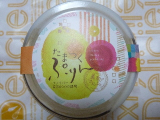
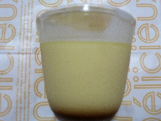

美肌マルシェの玄米プリン
更新日 : 2013/06/25

玉造アートボックス内にある、美肌マルシェの玄米プリンです。
栄養的に玄米がどうのこうのはよくわかりませんが...
ちょっと硬めのカスタードプリンでした。

久々に美味しいカスタードプリンを食べたー！って感じになれました。
私はプリンはちょっと固めで、卵味がする物が好きなので、ピッタリはまりました。
また食べたいです。
島根県松江市玉湯町玉造1241玉造アートボックス内
更新日 : 2013/06/25

玉造アートボックス内にある、美肌マルシェの玄米プリンです。
栄養的に玄米がどうのこうのはよくわかりませんが...
ちょっと硬めのカスタードプリンでした。

久々に美味しいカスタードプリンを食べたー！って感じになれました。
私はプリンはちょっと固めで、卵味がする物が好きなので、ピッタリはまりました。
また食べたいです。